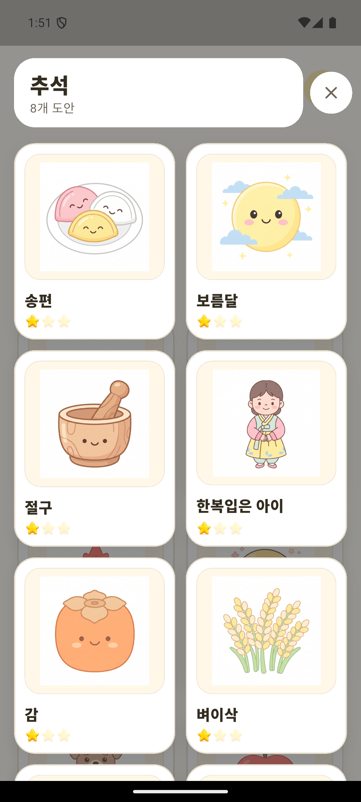
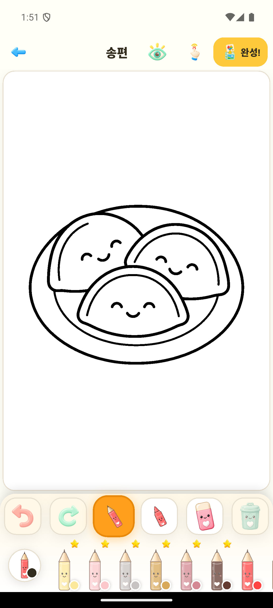
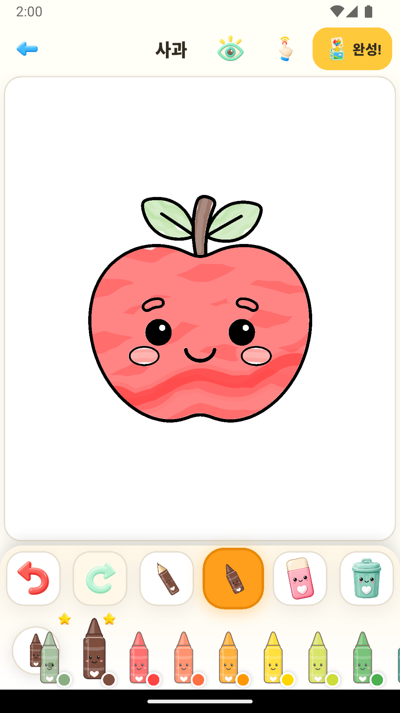

친근한 색칠 도구
연필과 크레용으로 색칠하고 굵기 선택, 지우개, 실행 취소와 다시 실행을 사용할 수 있어요.
큰 버튼과 단순한 흐름으로 그림과 색에 집중할 수 있어요. 계정도 필요하지 않습니다.
연필과 크레용으로 색칠하고 굵기 선택, 지우개, 실행 취소와 다시 실행을 사용할 수 있어요.
캔버스를 확대하고 움직이며 미니맵으로 작은 영역까지 편하게 살펴봐요.
내 작품에 저장하고 사진으로 내보내거나 기기의 공유 기능으로 나눌 수 있어요.
원하는 그림을 고르고 마음껏 색칠한 뒤 완성한 작품을 간직하세요.


